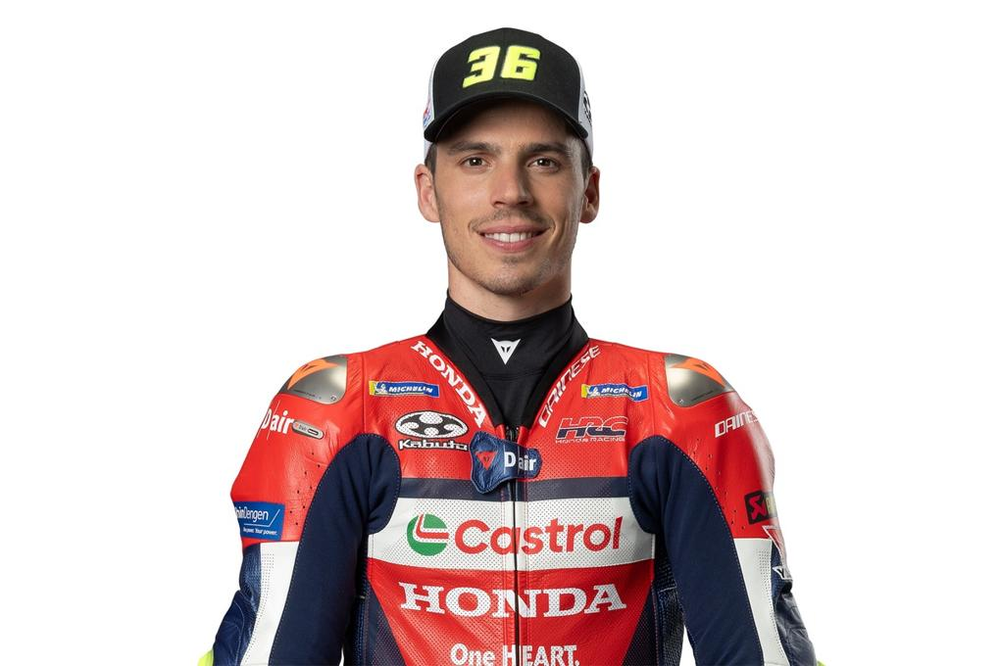

Información sobre Joan Mir
Joan Mir, nacido en Palma de Mallorca en 1997, ha sido campeón del mundo del motociclismo en dos categorías distintas: En 2017 quedó primero en la categoría de Moto3 logrando diez victorias en dieciocho carreras, y logró la victoria en MotoGP en 2020 con el equipo Suzuki Ecstar.

Ficha de información del piloto
- Fecha de nacimiento: 1 de septiembre de 1997
- Lugar de nacimiento: Palma de Mallorca
- Altura: 1,81m
- Peso: 69kg
- Moto: Honda RC213V
- Dorsal: 36
Joan Mir en acción
Equipos de MotoGP a los que ha pertenecido Joan Mir
- Suzuki Ecstar (2019-2022)
- Honda (2023 - 2025)
Estadísticas de Joan Mir en la temporada 2024
| Puntos | 21 |
|---|---|
| Posición final | 21 |
| Poles | 0 |
| Victorias | 0 |
| Podios | 0 |
Más información sobre el piloto
Empezó a correr a la edad de diez años en minimotos. Entre 2008 y 2011 corrió en las Islas Baleares, entrenando en la Escuela Lorenzo del padre de Jorge Lorenzo, Chicho Lorenzo. Sus primeras competiciones fueron en la Liga Interescuelas, posteriormente ganando títulos entre minimoto, minimotard y en la Bankia Cup. Mir compitió durante dos temporadas en la Red Bull MotoGP Rookies Cup en 2013 y 2014, terminando como subcampeón (con tres victorias) de Jorge Martín en 2014. Mir también disputó el FIM CEV Moto3 Junior World Championship en 2015.